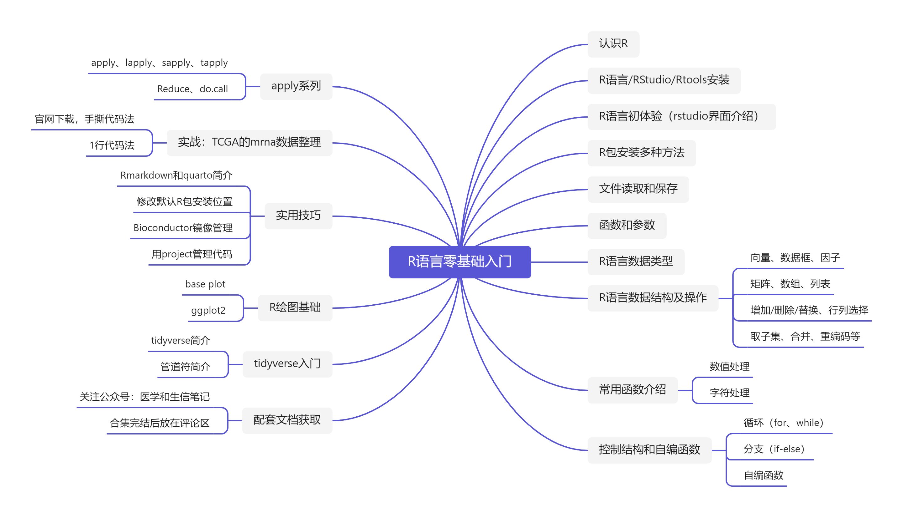

R语言零基础入门
前言
该配套文档已经进行了7次更新（最近一次是20250820），主要是把初学者常犯的错误指出来，帮助大家减少报错，报错内容主要来自b站、小红书、粉丝qq群，感谢大家；除此之外增加R/rtools/rstudio的版本注意问题。
- 本合集的Github项目地址：R_beginners
- 本合集的配套文档观看地址：R语言零基础入门
- 本合集的配套视频观看地址：R语言零基础入门
R语言在医学中的应用
很多初学者可能并不知道R语言在医学中有什么用，我先简单介绍一下。R语言在医学中的使用非常广泛，涉及方方面面！
首先肯定是医学统计分析，R语言就是统计学家开发的，相比于SPSS、SAS、Stata等软件，R语言的统计分析功能更加强大，一些新的统计方法也会首先使用R语言实现。对于一些复杂的meta分析等方法，目前也只有R语言才能实现。
其次是R语言在生信数据分析中应用广泛，经久不衰的生信数据挖掘也一直是医学生发文的热点方向之一。各种常见的生信下游分析（比如：差异分析、富集分析、生存分析、免疫相关分析、单细胞分析等）都是在R语言中实现的，各大生信数据库（比:TCGA、GEO、ICGC、CCLE等）挖掘也是以R语言为主。
第3是R语言在临床预测模型和机器学习方面的应用。临床预测模型也一直是发文的热点之一，目前多数临床预测模型相关的文章都是以R语言为主，除了传统的3大回归模型（线性回归、逻辑回归、COX回归）外，各种机器学习方法的使用也越来越频繁，这些都可以使用R语言实现。而且R语言在机器学习领域也越来越强大、易用。
第4是R语言在孟德尔随机化中的应用，孟德尔随机化曾是发文的爆点，各种MR分析方法都是以MR为主，R语言可以实现全套的MR分析。
第5是R语言在各大医学数据库挖掘中的使用，比如近几年非常火热的nhanes、GBD、CHARLS、FAERS、MIMIC、eICU等，它们的分析需要使用R语言。传统的EXCEL和SPSS无法实现这些复杂的分析。
第5是R语言的绘图功能强大，常见的统计图表（条形图、折线图、散点图、直方图、箱线图、小提琴图等）轻松拿捏，各种常见的医学三线表轻松绘制，亚组分析和森林图等1行代码实现；各种生信常见图形也是不在话下，比如热图、网络图等；各种地图也是手到擒来。
为什么要写这个合集
公众号一直免费分享各种R语言教程，主要是面向医学生/医生或者公卫、流统、统计等群体，但是这部分人是没有任何编程基础的，即使写的已经非常通俗简单了（甚至有朋友觉得太啰嗦），但还是有很多人跟着公众号的教程自己做不出来，并且有很多朋友一直问有没有相关的视频教程，之前是没有的，现在有了！这个教程就是专门为编程零基础的医学生/医生等群体准备的。
我在学习R语言的时候，走了很多弯路，我把其中的一些注意点写出来，让大家少走点弯路。
我认为《R语言是实战》是最适合医学生入门R语言的书籍，没有之一。但是由于书的作者是老外，所以这本书的开头部分和中国的特殊情况不太合适，比如它没有告诉我们大陆地区安装R包需要更改镜像，所以你一上来就遇到最大的难题：R包安装……并且有相当一部分医学生学习R语言是为了分析生信数据，然而这部分R包的安装又与默认方法不同……我太明白R包安装失败的痛苦了，刚学的时候啥也不懂，经常就困在安装R包上几个小时甚至几天！
另外就是有一些概念比较晦涩难懂，这对于没有任何计算机背景的医学生/医生来说是非常难解决的问题，尤其是刚开始接触R的时候，报错了也不知道怎么解决，或者找不到合适的解决方案，非常煎熬。又或者是你在相关的交流群问别人，可能出现“别人看不懂你的问题”或者“别人的回答你看不懂”，无效交流。
有一个非常著名的悖论就是：当你学会某项技能或知识时，你就会忘记你不会的时候是什么样子。我会尽量做到从初学者的角度进行讲解，虽然我也已经忘记我不会的时候是什么样子……
内容简介
本合集主要面向医学生/医生，或者公卫、流统、统计等群体，可能不适合其他专业。本合集仅有R语言最基础的内容，R语言实战内容会在本合集结束后新开合集介绍。
初学者学习R语言不需要完全记住所有内容，只需要有个大概印象即可，这样你在遇到类似的问题时可以知道解决的途径，也可以避免与别人交流时因为完全听不懂而产生无效交流。等使用次数多起来之后自然就会记住各种概念和用法，学习编程是一个熟能生巧的过程，一定要多敲代码！
主要内容如下：

与我的其他合集一样，本合集也会长期保持不定期更新，并且也是网页版免费看，PDF版付费获取（附赠Word版）。
- 免费文档观看网址：R语言零基础入门
- PDF版获取链接：公主号：R语言零基础入门PDF版；或者在[阿越就是我]的B站小店购买。
所有内容都已在我的个人公众号（医学和生信笔记）发布，收录在R语言入门合集中，包括数据获取方式，想要白嫖的可在历史推文中查看对应的文章（有些数据会在公众号文章的评论区放出获取方式）。
为了方便大家学习，我已经录制了配套的视频，放在了哔哩哔哩（我的B站账号：阿越就是我），免费观看，点击直达：R语言零基础入门
限于个人专业、水平、时间等问题，难免有很多不足之处，欢迎大家以各种方式（微信、QQ、公众号留言等）交流、建议。但是请不要抬杠，也请不要成为喷子、伸手党、张嘴党。
参考书目
主要参考了3本书：
- 《R语言实战》
- 《R数据科学》
- 《R语言编程-基于tidyverse》
推荐阅读
推荐一些适合医学生/医生的R语言书籍：
- 入门/R语言基础：
- 《R语言实战》
- 《R数据科学》
- 《R语言编程-基于tidyverse》
- R语言绘图：
- 《R数据可视化手册》（超详细版ggplot2绘制各种图形的说明书）
- 《ggplot2：数据分析与图形艺术》（ggplot2作者写的书）
- 《R绘图系统》（R语言绘图进阶）
- 预测模型和机器学习：
- 《应用预测建模》（caret说明书，适合医学生入门预测模型）
- 《R语言整洁建模》（《tidy modeling with R》中文版，本人翻译，已上市）
- 《Applied Machine Learning Using mlr3 in R》（中文版《使用mlr3应用机器学习》也是由我翻译，2025下半年上市）
- 《精通机器学习-基于R》（进一步了解caret及其他机器学习R包）